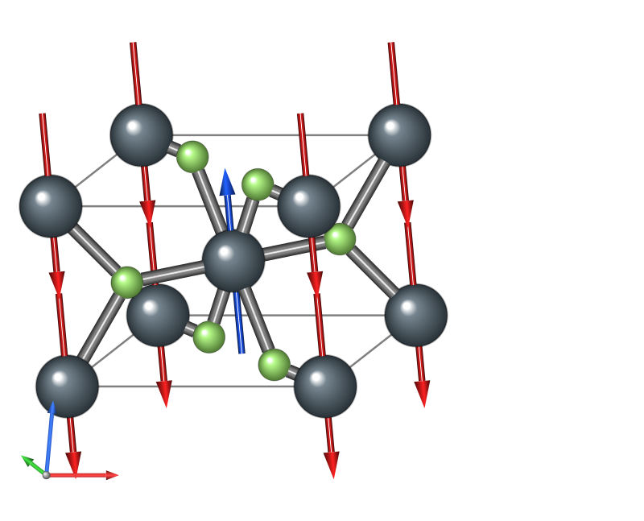
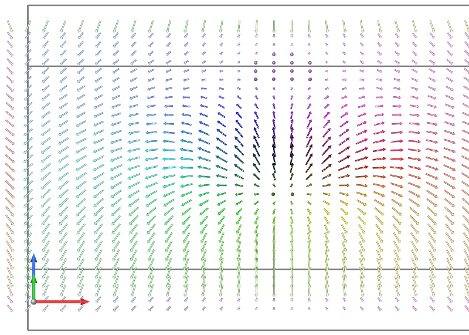
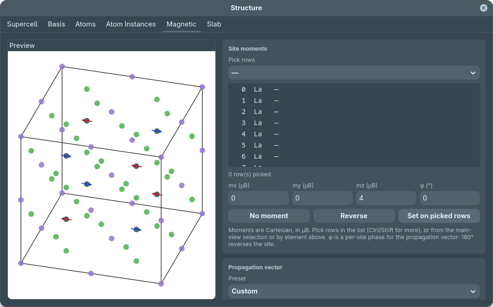

Magnetism
CView shows magnetic moments as arrows through the atoms, builds antiferromagnetic and other ordered cells, and writes the moments back out for VASP and Quantum Espresso. It handles collinear structures (ferro-, antiferro- and ferrimagnets), canted and non-collinear ones, and spin textures such as spirals and skyrmions.
A moment is stored on each atom as a Cartesian vector in μB. Most formats carry none, so nothing changes for a structure without moments.
Where the moments come from
| Source | What is read |
|---|---|
POSCAR / CONTCAR / .vasp | The INCAR or OUTCAR in the same folder (the file names are matched without regard to case). A CONTCAR takes the OUTCAR’s final moments first and the INCAR’s MAGMOM as a fallback; a POSCAR takes the INCAR first. |
vasprun.xml | MAGMOM from the run’s parameters on every frame. If an OUTCAR with one magnetization table per ionic step sits beside it, those computed moments are used per frame instead. |
| Quantum Espresso output | The last “Magnetic moment per site” block of each geometry (collinear, or three values per atom for a non-collinear run). |
| Magnetic CIF | .mcif, or a .cif with magnetic symmetry operations. See below. |
| Extended XYZ | A magmoms (or initial_magmoms) column, one value (collinear, along z) or three per atom. The XYZ writer saves the moments the same way. |
| OVF | The magnetization of a mumax3, OOMMF or Spirit run. See below. |
The System Log says where the moments came from, for example Magnetic moments from the INCAR MAGMOM beside the file.
VASP details
MAGMOMis used only when VASP would use it:ISPIN = 2, or a non-collinear run (LNONCOLLINEARorLSORBIT). With the defaultISPIN = 1it is ignored, so no arrows appear.N*xrepeats (2*5.0 3*0), comments,;between tags and\line continuations are handled.- The number of values must match the structure: N for a collinear run, 3N for a non-collinear one. Otherwise the file is skipped rather than guessed at.
SAXISis applied, so a collinearMAGMOMalong a rotated spin axis becomes the right Cartesian vector.
Magnetic CIF (mCIF)
The reader uses the magnetic space-group operations and centring translations of the file, each with its time-reversal flag (x,y,z,+1, -x,y,z,-1). Site moments in _atom_site_moment.crystalaxis_x/y/z are in μB along unit vectors parallel to a, b, c, as the standard defines them, and are spread over the symmetry-equivalent atoms as axial vectors:
- a rotation turns the moment;
- inversion leaves it unchanged, and a mirror keeps the component along the mirror normal and reverses the components in the mirror plane (a moment is an axial vector); and
- time reversal (
-1) reverses it.
That is what makes a body-centred antiferromagnet such as MnF₂ come out with opposite moments on the corner and centre atoms.

The Bilbao MAGNDATA database provides published structures in this format.Note
A plain
.cifthat has_atom_site_momentbut no magnetic operations is expanded with the ordinary symmetry and no time reversal, so an antiferromagnet would come out ferromagnetic. The System Log warns when this happens. Such an order needs the Magnetic tab instead.
OVF files (mumax3, OOMMF, Spirit)
.ovf, .omf and .ohf files hold a magnetization on a mesh of cells, usually nanometres apart. CView reads OVF 1.0 and 2.0, regular and irregular meshes, as text or binary (4 or 8 bytes), and shows one site per cell at the cell centre. Positions are converted from the file’s mesh unit to Å.
- Cells where the magnetization is zero (outside the magnet in a mumax3 geometry) are left out, so a disc reads as a disc.
- A magnetization in A/m is divided by its largest magnitude, so you always see m = M/Ms. Structure Info shows the sum and the average of m, without a μB unit.
- Meshes above 40 000 cells are thinned (every k-th cell in x and y) to keep the CPU renderer fast; the System Log reports it.
- Only vector fields are read: a scalar field (an energy density) is refused with a message.
- Opening a mesh switches on Arrows only and sets the arrow length to about one cell spacing, with bonds and periodic images off.

Snapshot series (movies)
A mumax3 or OOMMF run writes one file per snapshot: m000000.ovf, m000001.ovf, …. Open any one of them and CView loads the whole series from the same folder — every file whose name is the same up to a trailing number, with the same extension — in numeric order. The main view shows the file you opened; Structure → Trajectory Player… plays them all (see Trajectories). A Spirit file holding several snapshots as segments is played the same way.
- The simulation time (
Total simulation timein the header) is shown for each snapshot; the step is OOMMF’s iteration number, otherwise the number in the file name. - Which cells are kept, and how a magnetization in A/m is scaled, is decided from the opened snapshot and applied to all of them, so the frames are comparable.
- All snapshots are kept in memory. A long series of a large mesh is thinned further, to about 6 million cell moments in all (at least 2 000 cells per snapshot); the System Log says when it is.
- A file in the folder with a different mesh, or one that cannot be read, is left out with a warning.
- Other quantities in the same folder (
B_ext000000.ovf) and unnumbered files (m.ovf) are not part of the series.
Showing the moments
The Magnetic Moments group in the sidebar (under Appearance) controls the arrows for the active tab. The settings are per tab and are not saved between sessions.
| Control | Effect |
|---|---|
| Show Moment Arrows | Draw the arrows. |
| Arrows only | Hide the spheres of atoms that carry a moment, leaving the arrows at their full length. Use it for spin textures, where the spheres hide the pattern. Atoms without a moment (a substrate, say) stay visible. |
| Length (Å/μB) | Arrow length per μB. Each end of an arrow sticks out of the atom by half of |
| Color by | How the arrows are coloured (below). |
| Up / Down colours | The two colours used by the Up / Down mode (Color in Single mode). |
Color by:
| Mode | Use |
|---|---|
| Auto (default) | Up / Down when all moments are collinear, Direction otherwise. |
| Up / Down | Red along the structure’s magnetic axis, blue against it. The axis is the line of the largest moment (oriented towards +z), so antiferromagnets and ferrimagnets split into their sublattices whichever way the spins point. |
| Direction | Hue from the in-plane angle, white at +z and black at −z, the usual spin-texture colouring. |
| Single | One colour for every arrow. |
Tip
Near-white arrows (moments close to +z in Direction mode) are hard to see on the default light background. A grey or dark background helps.
Structure Info lists a moment column and the total moment: m_z when every moment is collinear along z, the full vector otherwise. An antiferromagnet shows a total of 0; a ferrimagnet shows its net moment.
Building a magnetic order
Structure → Magnetic Moments… opens the Magnetic tab of the Structure window. It sets moments on the atoms of the current cell and, with a propagation vector, builds the larger cell an antiferromagnetic order needs. The Preview pane shows the result with its arrows.

Site moments
A table lists every atom with its moment and phase φ.
- Pick rows: select them in the list (Ctrl or Shift for several), or use the Pick rows menu for the main-view selection, all atoms, or all of one element.
- Enter mx, my, mz (μB, Cartesian) and a phase, then press Set on picked rows. Reverse flips the picked moments; No moment clears them.
The phase is used by the propagation vector below: 180° reverses a site.
Propagation vector
Antiferromagnets often order on a cell larger than the chemical one, which a plain CIF cannot store. Neutron-diffraction papers describe the order with a propagation vector k (in reciprocal-lattice units). CView builds it as
m_j(R) = m_j · cos(2π k·R + φ_j)
for site j moved by the lattice vector R. The new cell is the old one multiplied along each axis by the denominator of the matching component of k (up to 12).
| Preset | k | Order (one magnetic atom per cubic cell) |
|---|---|---|
| Ferromagnetic | (0, 0, 0) | All parallel |
| A-type | (0, 0, ½) | Ferromagnetic planes, alternating along c |
| C-type | (½, ½, 0) | Antiferromagnetic planes, chains along c |
| G-type | (½, ½, ½) | Every neighbour antiparallel |
Components accept fractions such as 1/2 or 1/3. A component of ⅓ gives a modulated wave (+m, −m/2, −m/2).
- With k = 0 the cell and atom order stay as they are and only the moments are set (one undo step; selection is kept).
- With several magnetic sites per cell (rock-salt NiO, for example) use the phases: 180° on one sublattice gives the AFM-II pattern.
- The presets assume one magnetic atom per (pseudo)cubic cell, as on the B site of a perovskite.
A line under the controls gives the new cell size, atom count and net moment. Apply builds the structure (Edit → Undo reverses it), Reload from structure refills the table from the current structure.
Note
Only single-k orders are built: collinear or amplitude-modulated. A helix needs two components 90° out of phase, and an incommensurate k has no finite cell.
Example: G-type LaFeO₃
- Open a cubic LaFeO₃ cell and choose Structure → Magnetic Moments….
- In Pick rows choose All Fe, enter
mz = 4, press Set on picked rows. - Choose the G-type preset. The preview shows a 2×2×2 cell with alternating arrows; the net moment is 0.
- Press Apply.
Writing the moments for DFT
VASP
The DFT input card of the Magnetic tab shows the INCAR tags for the result, with Copy INCAR tags:
ISPIN = 2
MAGMOM = 2*3.6 2*-3.6 4*0
MAGMOMfollows the order CView writes a POSCAR in: atoms are grouped by element, with the symbols in alphabetical order (Fe before O), and atoms of one element keep their order. Anything written beside a POSCAR must follow it, and these tags do.- Moments collinear along some axis other than z are written as their component along that axis, with a comment in the output. With spin-orbit coupling, also set
SAXISto it. - Non-collinear moments get
LNONCOLLINEAR = .TRUE.and threeMAGMOMvalues per atom.
When you save a POSCAR (File → Save As) from a structure with moments, CView also writes these tags into an INCAR in the same folder, but only if there is none. An existing INCAR is never touched; the tags go to Structure Info instead.
Quantum Espresso
Saving as .in writes the magnetization into the &SYSTEM block. pw.x sets the starting magnetization per species, so CView splits each element into one species per distinct moment (Fe1, Fe2), with nspin = 2 and a signed starting_magnetization(i). Non-collinear moments get noncolin = .true. and angle1/angle2.
starting_magnetization is a fraction of the valence charge, not μB. CView scales the largest moment to 0.5 and keeps the others in proportion; the file says so in a comment, so adjust the values for your pseudopotentials.
pw.x allows at most 10 species. A texture with more distinct moments (a skyrmion, a spiral) is grouped: each magnetic element gets a share of the 10 slots, its moments are clustered into that many groups, and each group starts from its mean moment. The file and the System Log say when this happened.
Species labels such as Fe1, Fe_up are read back as the element, so a file written by CView opens again. The starting magnetization of a QE input is not read back as moments, however: it is a fraction, not μB.
What editing does to the moments
| Operation | Moments |
|---|---|
| Supercell, moving atoms, deleting atoms | Kept with their atoms. |
| Changing an atom’s element, or substituting an element | Dropped for those atoms: the new species’ moment is not known. |
| Slab, primitive/conventional conversion, rebuilding from a space group | Lost. These rebuild the atoms from element and position. The System Log warns when an edit drops every moment. |
Limits
- The arrows are drawn in the main view, the Structure window preview and the Trajectory Player; the 3D charge density window does not show them.
- Antiferromagnetic orders on a larger cell are only built from a single propagation vector. Searching all magnetic subgroups is not done: take a published structure from MAGNDATA as an mCIF instead.
- There is no topological charge or skyrmion builder yet; see the To Do list.